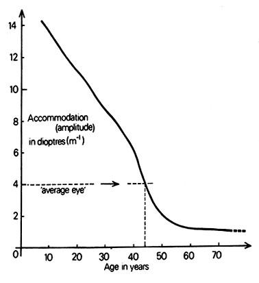

หลายๆ คนมาที่ร้าน Optical X แล้วบอกว่า "พี่ไม่เข้าใจเลย หลังๆ ปวดตาเป็นบ้า แล้วปวดหัวด้วย กินยาก็ไม่หาย อ่านอะไรก็ไม่ทน" — วันนี้ผมจะอธิบายให้เข้าใจง่ายๆ ด้วยตัวอย่างที่ทุกคนรู้จัก พร้อมข้อมูลทางวิชาการและงานวิจัยประกอบครับ
🔬 Presbyopia ในทางวิชาการ คืออะไร?
Presbyopiaมาจากภาษากรีก presbys (ชรา) + ops (ตา) แปลตรงตัวว่า "ตาแก่" เป็นภาวะที่ระบบปรับโฟกัสระยะใกล้ของดวงตาเสื่อมลงตามวัย หรือ "สายตายาวตามอายุ" เป็นภาวะทางสรีรวิทยาที่เกิดกับ ทุกคน ไม่ใช่โรค ไม่ใช่ความผิดปกติ แต่เป็นการเปลี่ยนแปลงตามธรรมชาติของร่างกายเมื่อเราอายุมากขึ้นครับ
ทางการแพทย์ Presbyopia ถูกนิยามว่าเป็นการสูญเสียความสามารถในการ Accommodationการเพ่ง (Accommodation) — กระบวนการที่ดวงตาเพิ่มกำลังหักเหเพื่อให้สามารถโฟกัสวัตถุระยะใกล้ได้ชัดเจน โดยอาศัยการเปลี่ยนรูปร่างของเลนส์แก้วตา (การเพ่ง) อย่างถาวร ซึ่งเกิดจากการเปลี่ยนแปลงทางชีวกลศาสตร์ 2 ปัจจัยหลัก:
1. เลนส์ตาสูญเสียความยืดหยุ่น — เมื่ออายุมากขึ้น โปรตีนในเลนส์ตา (Crystallin Proteins) จะรวมตัวกัน (aggregate) ทำให้เลนส์แข็งตัวขึ้นเรื่อยๆ กระบวนการนี้เรียกว่า Nuclear Sclerosisภาวะเลนส์ตาแข็งตัว — กระบวนการที่โปรตีนในเลนส์ตาค่อยๆ เกาะตัวกันจนเลนส์หนาและแข็งขึ้น เปลี่ยนรูปร่างได้ยาก
2. กล้ามเนื้อซิลิอารีทำงานลดลง — กล้ามเนื้อ Ciliary Muscleกล้ามเนื้อซิลิอารี — กล้ามเนื้อวงแหวนรอบเลนส์ตาที่ทำหน้าที่บีบและคลายเลนส์ เพื่อปรับโฟกัสระหว่างระยะไกลและใกล้ ที่ทำหน้าที่บีบเลนส์ จะอ่อนแรงลงตามอายุ ทำให้แรงที่ส่งผ่าน Zonular Fibersเส้นใยโซนูลาร์ — เส้นเอ็นขนาดเล็กจำนวนมากที่เชื่อมต่อกล้ามเนื้อซิลิอารีกับเลนส์ตา ทำหน้าที่ถ่ายทอดแรงบีบ/คลายเพื่อเปลี่ยนรูปร่างเลนส์ ไปยังเลนส์ลดน้อยลง
ทฤษฎีที่ได้รับการยอมรับมากที่สุดในปัจจุบันคือ Helmholtz's Theoryทฤษฎีของเฮล์มโฮลทซ์ — อธิบายว่าเมื่อกล้ามเนื้อซิลิอารีหดตัว เส้นใยโซนูลาร์จะคลายตัว ทำให้เลนส์ตาโป่งนูนขึ้นเพื่อโฟกัสระยะใกล้ เมื่อคลาย ก็จะกลับไปโฟกัสระยะไกล ซึ่งอธิบายว่าเมื่อกล้ามเนื้อซิลิอารีหดตัว จะทำให้เลนส์ตานูนขึ้น กำลังหักเหเพิ่ม ทำให้โฟกัสระยะใกล้ได้ แต่เมื่อเลนส์แข็งตัวตามอายุ การเปลี่ยนรูปร่างจะทำได้ยากขึ้นจนทำไม่ได้เลยครับ
💡 Presbyopia ไม่ใช่โรค ไม่ใช่สายตาสั้น-ยาว ไม่ได้เกิดจากใช้ตามาก แต่เป็นกระบวนการตามธรรมชาติที่เกิดกับทุกคนที่มีอายุมากขึ้น เหมือนผมหงอกหรือผิวเหี่ยวย่น — หลีกเลี่ยงไม่ได้ครับ
👁️ เข้าใจง่ายๆ — ดวงตาเหมือนกล้อง
ถ้าเรื่องวิชาการฟังยาก ลองนึกภาพแบบนี้ครับ: ดวงตาของเราเป็นกล้องถ่ายรูป
🔹 เลนส์ตา Crystalline Lensเลนส์แก้วตา — เลนส์ใสๆ ที่อยู่ด้านในดวงตา ทำหน้าที่หักเหแสงเพื่อให้ภาพตกบน Retina (จอประสาทตา) พอดี = เลนส์ของกล้อง ทำหน้าที่ปรับโฟกัสให้ภาพชัด
🔹 กล้ามเนื้อตา Ciliary Muscleกล้ามเนื้อซิลิอารี — กล้ามเนื้อรอบเลนส์ตาที่ทำหน้าที่บีบและคลายเลนส์ เพื่อปรับโฟกัสระหว่างระยะไกลและใกล้ = มอเตอร์ออโต้โฟกัสของกล้อง ทำให้ระบบซูมทำงานได้
ทั้งเลนส์ + กล้ามเนื้อ รวมกันเป็น "ระบบซูม" ของดวงตา ที่ช่วยให้เรามองไกลก็ชัด มองใกล้ก็ได้ — ความสามารถนี้เรียกว่า Amplitude of Accommodationค่าแอมพลิจูดของการเพ่ง — ตัวเลข (หน่วย Diopter) ที่วัดว่าระบบซูมของตาปรับโฟกัสระยะใกล้ได้มากแค่ไหน ยิ่งสูง ยิ่งมองใกล้ได้ดี คนอายุ 20 ปีมีประมาณ 10D / คนอายุ 50 ปีเหลือแค่ 0.5D
📉 เมื่อระบบซูมเสื่อมลงตามอายุ
สมัยหนุ่มสาว ระบบซูมของดวงตายังแข็งแรง สมมติว่าซูมได้ 5 เท่า ก็มองใกล้ได้สบายมาก แต่เมื่ออายุมากขึ้น เลนส์ตาแข็งตัว กล้ามเนื้อก็อ่อนแรง ทำให้ระบบซูมค่อยๆ ลดลง...
📐 ตารางค่า Accommodation ตามอายุ (Hofstetter's Formula)
สูตรที่ทัศนมาตรใช้ในทางคลินิกเพื่อประเมินค่าการเพ่งตามอายุ:
| อายุ (ปี) | ค่าเพ่งเฉลี่ย (D) | ค่าเพ่งต่ำสุด (D) | อาการ |
|---|---|---|---|
| 20 | 12.5 | 10.0 | มองใกล้สบาย |
| 30 | 9.5 | 7.5 | ยังมองใกล้ได้ดี |
| 40 | 6.5 | 5.0 | ⚠️ เริ่มอ่านยาก |
| 45 | 5.0 | 3.75 | ⚠️ ต้องยืดแขน |
| 50 | 3.5 | 2.5 | ต้องใส่แว่น |
| 60 | 0.5 | 0.0 | ซูมไม่ได้เลย |
|
* สูตร Hofstetter: ค่าเฉลี่ย = 18.5 − (0.30 × อายุ) / ค่าต่ำสุด = 15 − (0.25 × อายุ) * คนปกติต้องการอย่างน้อย 2.5D เพื่ออ่านหนังสือที่ระยะ 40 ซม. ได้สบาย |
|||

💡 กล้ามเนื้อตาไม่สามารถเปลี่ยนใหม่ได้ เมื่อระบบซูมเสื่อมลง สิ่งที่ช่วยได้คือ "แว่นสายตายาว" ซึ่งทำหน้าที่เหมือน แว่นขยาย ที่มาช่วยเสริมระบบซูมที่เสื่อมไปครับ
📱 ลองทำเองได้เลย!
หยิบมือถือขึ้นมา เปิดกล้องถ่ายรูป แล้วเอากล้องจ่อใกล้ๆ วัตถุ สังเกตมั้ยครับว่ากล้องจับโฟกัสไม่ได้? ต้องถอยออกมาถึงจะชัด — นี่แหละครับ เหมือนกับอาการ Presbyopiaเพรสไบโอเปีย (สายตายาวตามอายุ) — ภาวะที่ระบบปรับโฟกัสระยะใกล้ของดวงตาเสื่อมลงตามอายุ ทำให้มองใกล้ไม่ชัด ที่ต้องยืดแขนออกเพื่อให้ตัวหนังสือชัด!
ดังนั้น ถ้าพูดเป็นภาษาคนไทยง่ายๆ ก็คือ: แว่นสายตายาว = แว่นขยาย ที่ช่วยเสริมระบบซูมของร่างกายที่เสื่อมไป ครับ
🎯 พูดสั้นๆ ให้เข้าใจเลย: สายตายาว Presbyopia คือภาวะที่ "ระบบ Auto Focus ของดวงตาเราพัง" — ตาไม่สามารถปรับโฟกัสระยะใกล้ได้ด้วยตัวเองอีกต่อไป จึงต้องพึ่งตัวช่วยจากเลนส์แว่นตาเข้ามาทำหน้าที่แทนระบบ Auto Focus ที่เสียไปครับ
🩺 ตรวจหาค่าสายตายาว (Addition) ได้อย่างไร?
หลายคนสงสัยว่าทัศนมาตรวัดค่าสายตายาวยังไง ผมจะอธิบายกระบวนการให้ฟังครับ เพราะเรื่องนี้สำคัญมาก — ถ้าวัดผิดวิธี ค่าที่ได้จะไม่แม่นยำ
ขั้นตอนที่ 1: ตรวจสายตาระยะไกลก่อนเสมอ
ก่อนจะวัดค่าสายตายาว ต้องตรวจหา
ค่าสายตาระยะไกลDistance Refraction — ค่าสายตาพื้นฐานที่วัดจากการอ่านชาร์ตที่ระยะ 6 เมตร (หรือเทียบเท่า) เพื่อหาค่าสายตาสั้น/ยาว/เอียงก่อน ค่านี้เป็น "ฐาน" ที่จะนำไปคำนวณค่า Addition สำหรับระยะใกล้
ให้เรียบร้อยก่อน โดยให้ผู้รับการตรวจอ่านชาร์ตสายตาที่ระยะ 6 เมตร เพื่อหาค่าสายตาสั้น ยาว หรือเอียง (ถ้ามี) — ค่านี้คือ "ฐาน" ที่จะนำไปต่อยอด
ขั้นตอนที่ 2: วัดค่า Addition สำหรับระยะใกล้
เมื่อได้ค่าสายตาระยะไกลที่ถูกต้องแล้ว จึงเพิ่มเลนส์บวก (Plus Lens) ขึ้นไปทีละขั้นจนกว่าผู้รับการตรวจจะอ่านตัวหนังสือระยะใกล้ (ประมาณ 40 ซม.) ได้ชัดเจนสบายตา ค่าเลนส์ที่เพิ่มขึ้นมานี้เรียกว่า
Addition (Add)ค่า Addition — กำลังเลนส์บวกที่เพิ่มเข้าไปเหนือค่าสายตาระยะไกล เพื่อชดเชยระบบ Accommodation ที่เสื่อมลง ทำให้อ่านระยะใกล้ได้ชัด เช่น Add +2.00 หมายความว่าเพิ่มเลนส์บวก 2.00 Diopters สำหรับระยะใกล้
📌 สำคัญ: ถ้าไม่ตรวจระยะไกลก่อน ค่า Addition ที่ได้จะ ไม่แม่นยำ เพราะอาจมีสายตาสั้น/ยาว/เอียงซ่อนอยู่ ทำให้แว่นที่ตัดออกมาใส่ไม่สบาย
⚠️ เครื่อง Auto Refraction วัด Presbyopia ได้ไหม?
เครื่อง Auto RefractionAuto Refractometer / Auto Refraction Computer — เครื่องวัดสายตาอัตโนมัติที่พบตามร้านแว่นทั่วไป ใช้แสงอินฟราเรดวัดค่าสายตาระยะไกลเบื้องต้นแบบคร่าวๆ แต่ไม่ได้ออกแบบมาเพื่อวัดค่า Addition สำหรับ Presbyopia โดยเฉพาะ (เครื่องคอมพิวเตอร์วัดสายตา) ที่เห็นตามร้านแว่นทั่วไปนั้น ออกแบบมาเพื่อวัดค่าสายตาระยะไกลเบื้องต้นเท่านั้นครับ — ไม่สามารถวัดค่า Addition สำหรับสายตายาว Presbyopia ได้
แม้เครื่องรุ่นราคาสูงบางรุ่นจะมีฟังก์ชันประเมินค่า Addition ได้ แต่ก็ไม่แม่นยำเท่ากับการวัดมือ (Manual Refraction) โดยทัศนมาตร ซึ่งจะทดสอบจริงกับชาร์ตอ่านระยะใกล้ ปรับเลนส์ทีละขั้น และให้ผู้รับการตรวจลองอ่านจริงจนได้ค่าที่ชัดและสบายตาที่สุด
ทำไมการวัดมือถึงดีกว่า?
เพราะค่า Addition ที่เหมาะสมนั้นไม่ได้ขึ้นอยู่กับสูตรคำนวณอย่างเดียว แต่ยังขึ้นกับพฤติกรรมการใช้สายตาของแต่ละคน — ระยะทำงาน ระยะอ่านหนังสือ ขนาดตัวหนังสือที่ต้องอ่าน ท่านั่งทำงาน — สิ่งเหล่านี้เครื่องคอมพิวเตอร์วัดไม่ได้ ต้องอาศัยทัศนมาตรสัมภาษณ์และทดสอบจริงครับ
💡 ที่ Optical X เราตรวจสายตาด้วย Manual Refraction ในห้องตรวจมาตรฐาน 6 เมตร จากนั้นทดสอบค่า Addition ด้วยเลนส์ทดลองจริง พร้อมให้ลองเลนส์โปรเกรสซีฟกว่า 60 แบบ เพื่อให้ได้ค่าที่แม่นยำและเหมาะกับไลฟ์สไตล์ของคุณจริงๆ ครับ
📊 งานวิจัยบอกว่าอะไร?
Presbyopia ไม่ใช่เรื่องเล็กๆ ครับ — ข้อมูลจากงานวิจัยทั่วโลกชี้ว่านี่เป็นปัญหาสายตาที่พบมากที่สุดในผู้ใหญ่:
การศึกษาเชิง meta-analysis ที่ตีพิมพ์ในวารสาร Ophthalmology ของ American Academy of Ophthalmology ประเมินว่าในปี 2015 มีผู้มีภาวะ Presbyopia ทั่วโลกราว 1.8 พันล้านคน คิดเป็นประมาณ 25% ของประชากรโลก ในจำนวนนี้ราว 826 ล้านคนมองใกล้ไม่ชัดเพราะไม่มีแว่นหรือมีแว่นที่ไม่เหมาะสม คิดเป็น unmet need ราว 45%
บทความรีวิวจาก BCLA CLEAR (2024) รวบรวมหลักฐานว่า Presbyopia มีผลกระทบอย่างกว้างขวาง ทั้งด้านคุณภาพการมองเห็น ผลิตภาพในการทำงาน ภาระทางการเงิน สุขภาพจิต ความเป็นอยู่ทางสังคม และสุขภาพกาย WHO ประเมินว่าปัญหาการมองเห็นที่ไม่ได้รับการแก้ไข (รวม presbyopia) ก่อให้เกิดการสูญเสียผลิตภาพทั่วโลกสูงราว 411 พันล้านดอลลาร์ต่อปี
งานวิจัยด้าน accommodative amplitude จาก EyeWiki (American Academy of Ophthalmology) ระบุว่าในช่วง 20 ปีแรกของชีวิต ค่า accommodation จะค่อนข้างคงที่อยู่ที่ราว 7–10 Diopters แต่เมื่ออายุถึง 50 ปี ค่าจะลดลงเหลือเพียงราว 0.5 Diopter ซึ่งแทบจะไม่มีความสามารถในการโฟกัสใกล้เลย
ข้อมูลจาก WHO Southeast Asia Region Action Plan (2022) ชี้ว่าประชากรเกือบ 30% ของผู้มีปัญหาสายตาทั่วโลกอยู่ในภูมิภาคเอเชียตะวันออกเฉียงใต้ (รวมประเทศไทย) สาเหตุหลักคือสายตาผิดปกติที่ไม่ได้รับการแก้ไข โดย presbyopia ที่ไม่ได้รับการดูแลคือปัญหาอันดับต้นๆ ในภูมิภาคนี้ นอกจากนี้ ปัจจัยเสี่ยงที่ทำให้เป็น presbyopia เร็วกว่าปกติรวมถึงภูมิอากาศร้อนใกล้เส้นศูนย์สูตร ซึ่งรังสี UV สูงอาจเร่งให้เลนส์ตาแข็งตัวเร็วขึ้น
การศึกษาในแทนซาเนียที่ตีพิมพ์ใน PMC พบว่า 80% ของผู้ที่มี presbyopia รายงานว่ามีปัญหาการมองใกล้ และ 71% ไม่พอใจกับความสามารถในการทำงานใกล้ของตัวเอง หลังได้รับแว่นสายตายาวที่เหมาะสม 92% ของผู้เข้าร่วมยังคงใช้แว่นอย่างสม่ำเสมอ และรายงานว่าคุณภาพชีวิตโดยรวมดีขึ้นอย่างมีนัยสำคัญ นอกจากนี้งานวิจัยจากอินเดียยังพบว่าคนงานในโรงงานที่มี presbyopia ได้รับแว่นแล้วมีผลิตภาพเพิ่มขึ้นอย่างชัดเจน